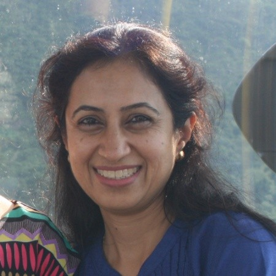
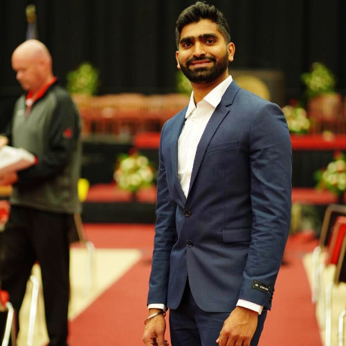
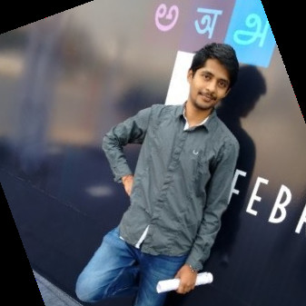
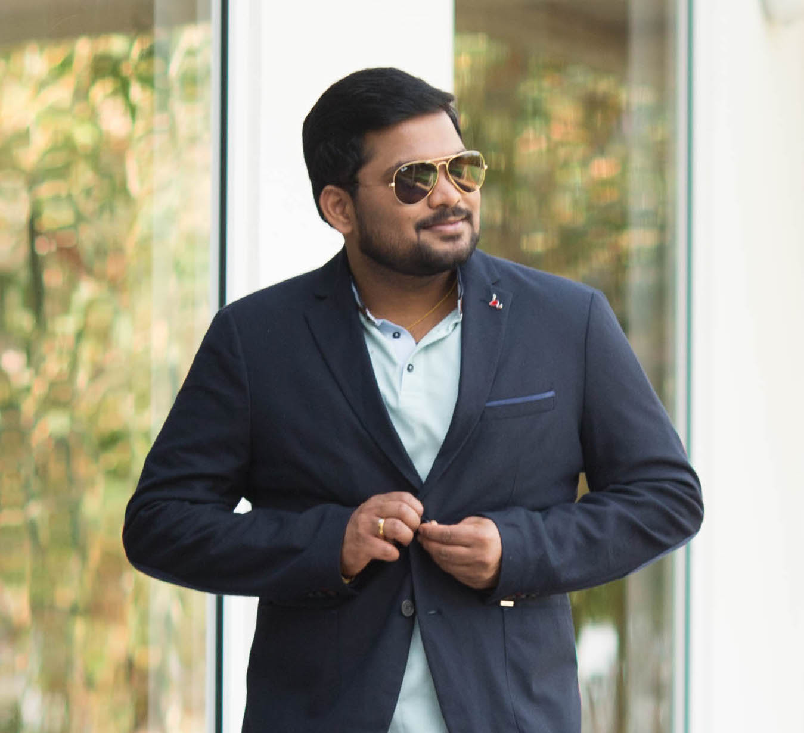

CTSA Team
Clinical & Translational Science Alliance Team
For the people who made a difference to our lives and the ones we just don't want to say Good Bye.
We are part of Georgia CTSA
People

Nita Deshpande
Senior Systems Software Engineer.- Born in India, graduated with a PhD in Molecular Biosciences (UT Austin) and an MS in Computer Science. Work focused mostly on developing web applications and software for Life Sciences. Avid fan of Indian Classical Music and accomplished Indian Classical Dancer.

Nityananda Reddy Chappidi
Systems Software Engineer.- Born in India and came to USA in 2016. I completed my masters in Computer information systems at UCM. Currently working on development and maintenance of Eureka! Clinical Analytics.

Dileep Gunda
Software Engineer.- I was born in the south of India, Graduated from Georgia State University, with Masters degree in Computer Science. I enjoy being challenged and engaging with projects that require me to work outside my comfort and knowledge set. Skilled in designing, testing, and developing software, Good understanding of data structures and algorithms.

Venkatesh Javvaji
Systems Software Engineer.- I am from Hyderabad, located in southern part of India. I have done my Masters from Georgia State University at Atlanta. I like to learn new things. It could be either a new technology, Concept or a process… that's my motto everyday. I usually relax by hearing to music or going outdoor and I like to travel.
 Miao Ai
Miao Ai
Software Engineer..- Miao has been working as a Systems Software Engineer for CTSA Informatics team since November 2015. In CTSA, she is involved in re-designing and developing of Eureka! Clinical user management, and phenotype projects, as well as refactoring UI using angularJS framework.
Maren Parsell
Innovation Program & Research Manager.- Maren have a BFA, MBA, PMP, and CPCMP. Her background is in Healthcare Innovation and Design Strategy and she have previously worked in small healthcare start-ups to large multinational organizations like Bayer Healthcare. She moved over 30 times in 7 states and 3 European countries. She also enjoy renovating pre-1950 homes with her husband - who can build almost anything!
.
Senior Systems Software Engineer.- Born in India, graduated with a PhD in Molecular Biosciences (UT Austin) and an MS in Computer Science. Work focused mostly on developing web applications and software for Life Sciences. Avid fan of Indian Classical Music and accomplished Indian Classical Dancer.
Systems Software Engineer.- Born in India and came to USA in 2016. I completed my masters in Computer information systems at UCM. Currently working on development and maintenance of Eureka! Clinical Analytics.
Software Engineer.- I was born in the south of India, Graduated from Georgia State University, with Masters degree in Computer Science. I enjoy being challenged and engaging with projects that require me to work outside my comfort and knowledge set. Skilled in designing, testing, and developing software, Good understanding of data structures and algorithms.
Systems Software Engineer.- I am from Hyderabad, located in southern part of India. I have done my Masters from Georgia State University at Atlanta. I like to learn new things. It could be either a new technology, Concept or a process… that's my motto everyday. I usually relax by hearing to music or going outdoor and I like to travel.
Software Engineer..- Miao has been working as a Systems Software Engineer for CTSA Informatics team since November 2015. In CTSA, she is involved in re-designing and developing of Eureka! Clinical user management, and phenotype projects, as well as refactoring UI using angularJS framework.
Innovation Program & Research Manager.- Maren have a BFA, MBA, PMP, and CPCMP. Her background is in Healthcare Innovation and Design Strategy and she have previously worked in small healthcare start-ups to large multinational organizations like Bayer Healthcare. She moved over 30 times in 7 states and 3 European countries. She also enjoy renovating pre-1950 homes with her husband - who can build almost anything! .